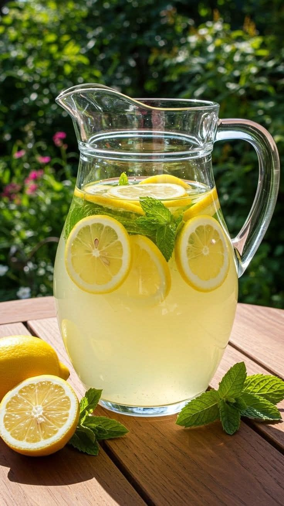

Lemonade is the best! ☺
Welcome to MY lemonade stand! Lemonade is delicious when made right, or else this will cause you to have a bitter taste. Lemonade is best when you have the right amount of ice, water, sugar, and the most important lemons.

The healthy side of drinking lemonade is to stay hydrated and get vitamin C. A big glass of ice-cold lemonade is the best after a long day in the sun, especially after a swim in the pool.
If you do not like the original yellow lemonade, please check out lessons to gain more insights on other flavors of lemonade. You should avoid drinking the beverage hot, watered down, or right after brushing your teeth to be able to have the best experience.